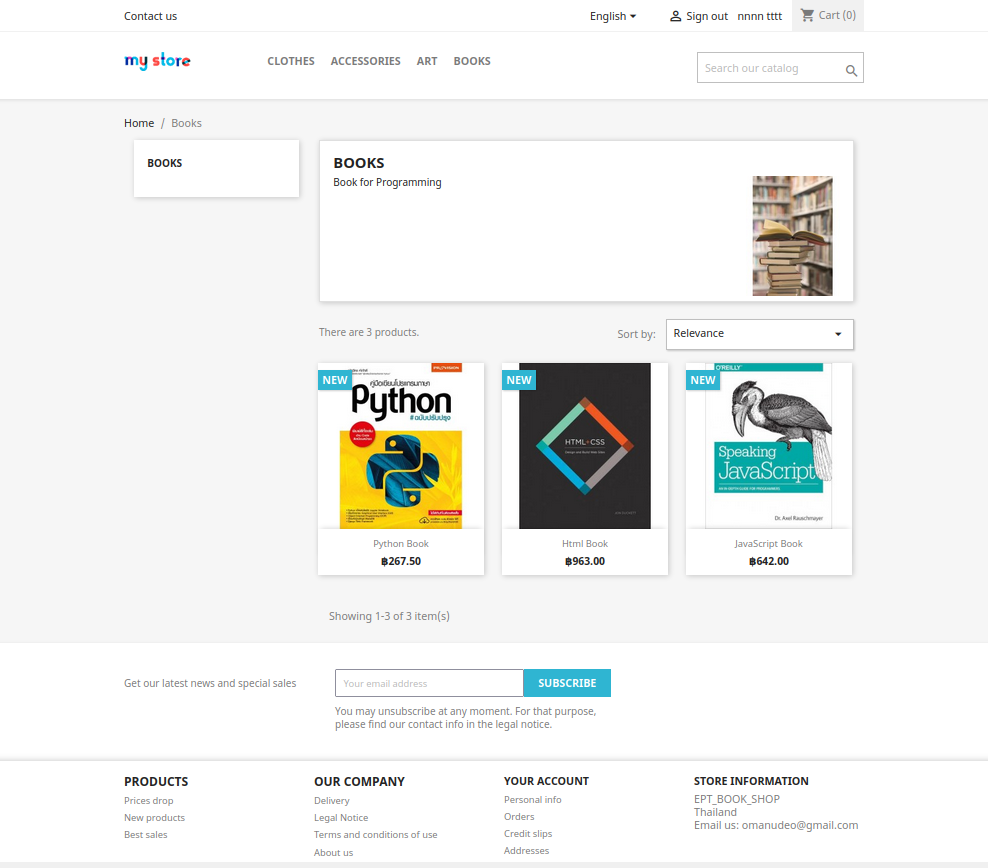
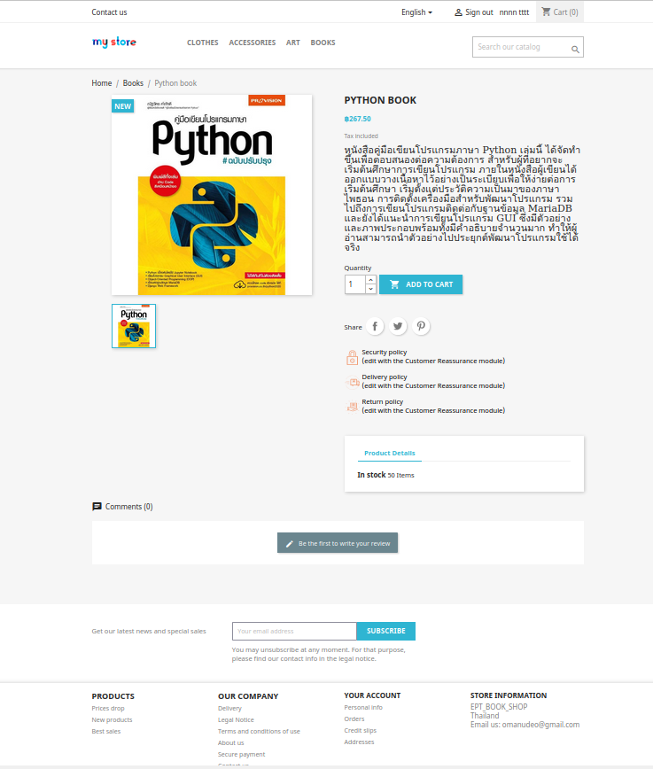
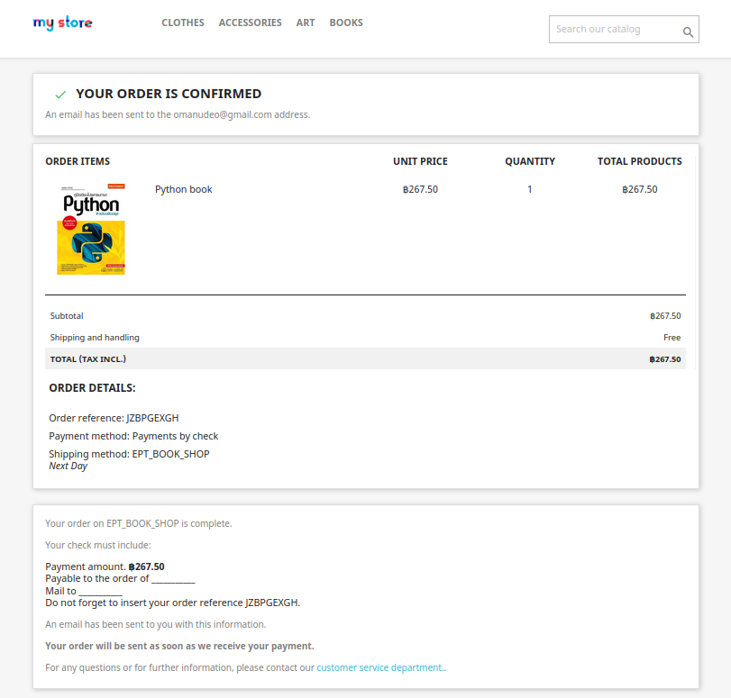

ทดลองสร้าง website ขายของด้วย presta shop โดยใช้บริการของ Amazon EC2, LightSail เป็น web-service ของ Amazon ในส่วนของ cloud server เลือกเป็น LAMP(PHP7) เพื่อจะทดลองลง presta shop ด้วยตนเองและจัดการไฟล์ต่างๆโดยใช้ fileZila ส่วนเรื่องการ connect server ใช้ Putty ในการควบคุมซึ่ง Connect ผ่านระบบ SSH key ในส่วนของการทดลองใช้ ผู้เขียนได้ทดลองเพิ่ม categories ชื่อ Books เข้าไปและได้ลองใส่หนังสือที่ต้องการจะขายไป 3 เล่มด้วยกันดังรูปด้านล่าง
ต่อมาจะทดลองกดสั่งซื้อหนังสือที่อยู่ใน categories ดังกล่าว ในตัวอย่างได้ทดลองclickไปที่หนังสือ python และได้มาที่หน้าดังภาพด้านล่าง
เมื่อทดลองกด Add to cart และกดตามขั้นตอนการสั่งซื้อจนสำเร็จ ดังภาพด้านล่าง
ดังภาพจะเห็นได้ว่าทำรายได้สั่งซื้อหนังสือเสร็จสิ้นสมบูรณ์ไม่มีปัญหาใดๆ ก็ถือว่าเป็นการจบการทดลองการสร้าง web presta shop และทดลองใช้ในทั้งฝั่ง admin และ client